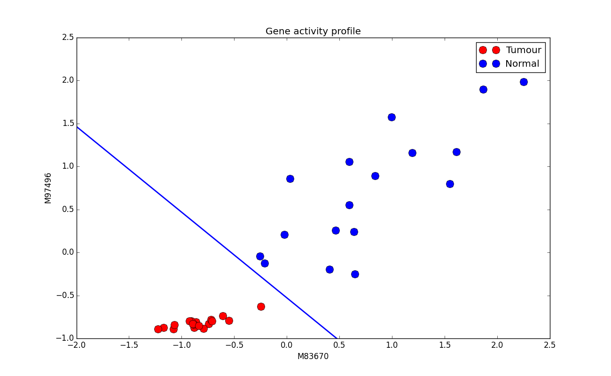

Aprendizagem Automática
Support Vector Machines, part 1
Ludwig Krippahl
Support Vector Machines
Summary
- Maximum Margin Classifier
- Support Vectors
- Support Vector Machine
Support Vector Machines
Maximum Margin Classifier
Maximum Margin
- Example: cancer and gene activity
Maximum Margin
- First approach (didn't work) $E = \sum_{j=1}^{N} \left(y(\vec{x_j}) - t_j\right) ^2$
Maximum Margin
Logistic Regression:minimize
$$- \sum_{n=1}^{N} \left[ t_n \ln g_n + (1-t_n) \ln (1-g_n) \right]$$
Maximum Margin
Logistic Regression
- Minimize $$- \sum_{n=1}^{N} \left[ t_n \ln g_n + (1-t_n) \ln (1-g_n) \right]$$ $$g_n = \frac{1}{1+e^{-(\vec{w}^T\vec{x_n}+w_0)}}$$
- This makes the function constant away from the frontier, allowing the frontier to be placed in different points.
- Problem: increasing the magnitude of $\widetilde{w}$ increases the steepness of the logistic function
Maximum Margin
Logistic Regression
- Placing the frontier:
Maximum Margin
Logistic Regression
- Placing the frontier:
Maximum Margin
Logistic Regression
- Without regularization, more susceptible to overfitting
- With regularization, $\widetilde{w}$ can be forced to be smaller.
- This places the frontier farther from the closest points.
- In other words, we want to maximize the margin.
Maximum Margin
Logistic Regression
- With regularization:
Maximum Margin
Logistic Regression
- With regularization:
Maximum Margin
Logistic Regression
- Regularization reduces overfitting by increasing the margin
- However, it does so indirectly, by changing the cost function.
def log_cost(theta,X,y,C):
coefs = np.zeros((len(theta),1))
coefs[:,0] = theta
sig_vals = logistic(np.dot(X,coefs))
log_1 = np.log(sig_vals)*y
log_0 = np.log(1-sig_vals)*(1-y)
return -np.mean(log_0+log_1)+np.sum(coefs**2)/C
- The regularization term
np.sum(coefs**2)/C
Maximum Margin
Maximum margin classifier
- A
Margin Classifier is a classifier that provides a distance to the discriminant - The hyperplane separating the classes in a linear classifier.
- A
Maximum Margin Classifier finds the maximum-margin discriminant, maximizing the distance to the nearest points to separate.
Maximum Margin
Maximum margin classifier
- Maximizing distance to nearest points reduces overfitting by constraining the frontier
- Margin examples are Support Vectors
Maximum Margin
(Trying to) implement maximum margin classifier
- Signed distance to hyperplane: $$r = \frac{\vec{w}^Tx+w_0}{||\vec{w}||}$$
- $\vec{w}^Tx+w_0$, positive or negative on either side
- $||\vec{w}||$ is the norm of the vector
Maximizing the margins:
- Maximize the min. product of signed distance by class $$\underset{\vec{w}, w_0} {\mathrm{argmax}} \left( \underset{j} {\mathrm{min}} \frac{y_j(\vec{w}^Tx_j+w_0)}{||\vec{w}||} \right)$$
Maximum Margin
Maximum margin classifier
- Signed distance to hyperplane
def closest_dist(ws, Xs, Ys):
coefs = np.zeros((len(ws)-1,1))
coefs[:,0] = ws.flatten()[:-1]
dists = np.dot(Xs,coefs) + ws[-1]
norm = np.sqrt(np.sum(coefs**2))
return -np.min(dists * Ys / norm)
# load data
ws = np.random.rand(3)
sol = minimize(closest_dist, ws, args = (Xs,Ys))
Maximum Margin
Maximum margin classifier
- Unfortunately, it doesn't work...
Maximum Margin
Maximum margin classifier
- The objective function does not have a continuous derivative
SVM 1
Support Vector Machine
Support Vector Machine
The problem
- Basic idea is simple: maximize margin
- But difficult to compute because of discontinuity
- (Machine learning depends on numeric methods)
The solution
- Lots of equations ahead, but necessary to understand some important properties
- (not to memorize)
Support Vector Machine
- The normalized distance is invariant to scaling: $$\frac{y_n(w^Tx_n+w_0)}{||w||}=\displaystyle\frac{y_n(\beta \vec{w}^Tx_n+\beta w_0)}{\beta ||\vec{w}||}$$
- So we can impose a margin of at least 1 by scaling $\vec{w}$ and $w_0$: $$y_n(\vec{w}^Tx_n+w_0)\ge 1, \forall n \in N$$
- Now we find, subject to the constraint above: $$\underset{\vec{w}, w_0} {\mathrm{argmax}} \left( \underset{j} {\mathrm{min}} \frac{y_j(\vec{w}^Tx_j+w_0)}{||\vec{w}||} \right)=\underset{\vec{w},w_0}{\operatorname{arg\,min}}\frac{1}{2}||\vec{w}||^2$$
- The vector $w_0$ is determined by the constraint
- Distance to margin can be increased by shortening $\vec{w}$, respecting the constraint
Support Vector Machine
Constrained optimization problem:
$$\underset{\vec{w},w_0}{\operatorname{arg\,min}}\frac{1}{2}||\vec{w}||^2$$ $$y_n(\vec{w}^Tx_n+w_0)\ge 1, \forall n \in N$$- We can solve this with the method of Lagrange multipliers
Constrained Optimization
- Lagrange multipliers, example: $$\underset{x,y}{\operatorname{arg\,max}}\, ( 1- x^2 - y^2 )$$
Constrained Optimization
- Lagrange multipliers, example: $$\underset{x,y}{\operatorname{arg\,max}}\, ( 1- x^2 - y^2 )\, \text{s.t.} \, x - y - 1 = 0$$
Constrained Optimization
- Along the line $x - y - 1 = 0$, at the maximum the function $1- x^2 - y^2$ cannot increase (must be parallel to contour line)

Constrained Optimization
- Since $g(x,y) = 0$ is a contour line of $g$,if $f(x,y)$ is maximum s.t. $g(x,y)=0$, then the contour line of $f(x,y)$ is parallel to the contour line of $g(x,y)$
- The gradients are parallel too, since they are perpendicular to the contour line (the negative sign is conventional): $$\vec\nabla_{x,y}f(x,y) = -\alpha \vec\nabla_{x,y}g(x,y)$$
- We combine these into the Lagrangian $$\mathcal{L}(x,y,\alpha) = f(x,y) + \alpha g(x,y)$$
- Solve:$$ \vec\nabla_{x,y,\alpha} \mathcal{L}(x,y,\alpha)=0$$
- where $\alpha$ is the the lagrangian multiplier
- Same idea for inequality, with $h(x,y)\leq 0$
Constrained Optimization
Back to our example, solve for all derivatives at zero
Constrained Optimization
- Solve for derivatives at zero $$\vec\nabla_{x,y,\alpha}\left( 1- x^2 - y^2 + \alpha(x - y - 1) \right) = 0$$ $$\frac{\delta\mathcal{L}}{\delta x} = -2x + \alpha = 0$$ $$\frac{\delta\mathcal{L}}{\delta y} = -2y - \alpha = 0$$ $$\frac{\delta\mathcal{L}}{\delta \alpha} = x - y - 1 = 0$$
- Solution: $\left\{ 0.5,-0.5 \right\} $ (Critical point of the lagrangian)
Constrained Optimization
- Solution $\left\{ 0.5,-0.5 \right\} $:
Support Vector Machine
Applying the same method to this problem:
$$\underset{w,w_0}{\operatorname{arg\,min}}\frac{1}{2}||\vec{w}||^2$$ $$y_n(\vec{w}^T\vec{x}_n+w_0)\ge 1 \Leftrightarrow -y_n(\vec{w}^T\vec{x}_n+w_0)+1 \leq 0$$- We write the Lagrangian: $$\mathcal{L}(\vec{w},w_0,\vec{\alpha})=\frac{1}{2}||\vec{w}||^2 - \sum\limits_{n=1}^{N} \alpha_n \left(y_n(\vec{w}^Tx_n+w_0) - 1\right)$$
- At the critical points, derivatives w.r.t. $\vec{w}$ and $w_0$ are 0: $$\frac{\delta \mathcal{L}}{\delta \vec{w}}=0 \Leftrightarrow \vec{w}=\sum\limits_{n=1}^{N} \alpha_n y_n \vec{x}_n$$ $$\frac{\delta \mathcal{L}}{\delta w_0}=0 \Leftrightarrow \sum\limits_{n=1}^{N} \alpha_n y_n=0$$
Support Vector Machine
Replacing these here:
$$\mathcal{L}(\vec{w},w_0,\vec{\alpha})=\frac{1}{2}||\vec{w}||^2 - \sum\limits_{n=1}^{N} \alpha_n \left(y_n(\vec{w}^T\vec{x}_n+w_0) - 1\right)$$- We get the dual representation of the optimization problem: $$\underset{\vec{\alpha}}{\operatorname{arg\,max}} \sum\limits_{n=1}^N \alpha_n -\frac{1}{2} \sum\limits_{n=1}^{N}\sum\limits_{m=1}^{N} \alpha_n \alpha_m y_n y_m \vec{x}_n^T \vec{x}_m $$
- Subject to the constraints $$\sum\limits_{n=1}^{N} \alpha_n y_n=0 \qquad \alpha_n \ge 0$$
Support Vector Machine
Intuition:
$$\underset{\vec{\alpha}}{\operatorname{arg\,max}} \sum\limits_{n=1}^N \alpha_n -\frac{1}{2} \sum\limits_{n=1}^{N}\sum\limits_{m=1}^{N} \alpha_n \alpha_m y_n y_m \vec{x}_n^T \vec{x}_m $$ $$\sum\limits_{n=1}^{N} \alpha_n y_n=0 \qquad \alpha_n \ge 0$$- Points surrounded by same class neighbours, $\alpha$ = 0
- Points near neighbours of the other class, $\alpha$ > 0
- This can be solved with quadratic programming
Implementing an SVM
Implementing a linear SVM with SciPy optimize
- (you don't have to do this; just to illustrate the details) $$\underset{\vec{\alpha}}{\operatorname{arg\,max}} \sum\limits_{n=1}^N \alpha_n -\frac{1}{2} \sum\limits_{n=1}^{N}\sum\limits_{m=1}^{N} \alpha_n \alpha_m y_n y_m \vec{x}_n^T \vec{x}_m $$ $$\sum\limits_{n=1}^{N} \alpha_n y_n=0 \qquad \alpha_n \ge 0$$ $$H = \sum\limits_{n=1}^{N}\sum\limits_{m=1}^{N} y_n y_m \vec{x}_n^T \vec{x}_m $$
def H_matrix(X,Y):
H = np.zeros((X.shape[0],X.shape[0]))
for row in range(X.shape[0]):
for col in range(X.shape[0]):
H[row,col] = np.dot(X[row,:],X[col,:])*Y[row]*Y[col]
return H
Implementing an SVM
Implementing a linear SVM with SciPy optimize
$$\underset{\vec{\alpha}}{\operatorname{arg\,max}} \sum\limits_{n=1}^N \alpha_n -\frac{1}{2} \sum\limits_{n=1}^{N}\sum\limits_{m=1}^{N} \alpha_n \alpha_m y_n y_m \vec{x}_n^T \vec{x}_m $$ $$\sum\limits_{n=1}^{N} \alpha_n y_n=0 \qquad \alpha_n \ge 0$$- Loss function (to minimize)
def loss(alphas):
return 0.5 * np.dot(alphas.T, np.dot(H, alphas)) - np.sum(alphas)
- The Jacobian (derivatives)
def jac(alphas):
return np.dot(alphas.T,H)-np.ones(alphas.shape[0])
Implementing an SVM
- Load the data (Xs, Ys)
Implementing an SVM
- Minimize the function, with constraints, using Sequential Least Squares Programming
H = H_matrix(Xs,Ys)
A = Ys[:,0] # sum of alphas is zero
cons = {'type':'eq',
'fun':lambda alphas: np.dot(A,alphas),
'jac':lambda alphas: A}
bounds = [(0,None)]*Xs.shape[0] #alpha>=0
x0 = np.random.rand(Xs.shape[0])
sol = minimize(loss, x0, jac=jac, constraints=cons,
method='SLSQP', bounds = bounds)
- Identify the support vectors
In : svs = sol.x>0.001
In : print(svs)
[False False False False False False True False False False False False
False False False False False False False False False False False True
False False False False False False False False False False False True]
Implementing an SVM
- Support vectors
Implementing an SVM
- Compute hyperplane: $$\vec{w} = \sum\limits_{n=1}^{N}\alpha_n y_n\vec{x}_n$$
- $y_n (\vec{w}^T \vec{x}_n +w_0) = 1$ for support vectors, so $w_0$ can be computed from the average of $y_n - \vec{w}^T \vec{x}_n$ over the support vectors.
def svm_coefs(X,Y,alphas):
w = np.sum(alphas*Y*X.T,axis = 1)[:,np.newaxis]
w0 = np.mean(Y-np.dot(X,w))
coefs = np.zeros(len(w)+1)
coefs[-1] = w0
coefs[:-1] = w.flatten()
return coefs
coefs = svm_coefs(Xs[svs,:],Ys[svs,0],sol.x[svs])
Implementing an SVM
- Support vectors and frontier

Aprendizagem Automática
Summary
SVM-1
Summary
- Maximum margin (reduce overfiting)
- Constrained optimization to solve the problem
- SVM: maximize for $\vec\alpha$
- SVM: H matrix (inner products)
- Support Vectors to determine the frontier
Further reading
- Alpaydin, Sections 13.1 and 13.2
- Marsland, Section 5.1
Aprendizagem Automática
Support Vector Machines, part 1
Ludwig Krippahl